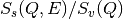
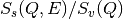
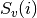
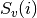
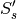
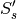
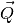
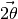

BASISReduction dialog.
Table of Contents
| Name | Direction | Type | Default | Description |
|---|---|---|---|---|
| RunNumbers | Input | string | Sample run numbers | |
| DoIndividual | Input | boolean | False | Do each run individually |
| ExcludeTimeSegment | Input | string | Exclude a contigous time segment; Examples: “71546:0-60” filter run 71546 from start to 60 seconds, “71546:300-600”, “71546:120-end” from 120s to the end of the run | |
| RetainTimeSegment | Input | string | Only retain events occurring within a time segment. Examples: 71546:0-3600 only retains events from the first hour of run 71546. 71546:3600-7200 retain only the second hour. 71546:7200-end retain events after the first two hours | |
| GroupDetectors | Input | string | None | Switch for grouping detectors. Allowed values: [‘None’, ‘Low-Resolution’, ‘By-Tube’] |
| DoFluxNormalization | Input | boolean | True | Do we normalize data by incoming flux? |
| FluxNormalizationType | Input | string | Monitor | Flux Normalization Type. Allowed values: [‘Monitor’, ‘Proton Charge’, ‘Duration’] |
| NormalizeToFirst | Input | boolean | False | Normalize spectra to intensity of spectrum with lowest Q? |
| ReflectionType | Input | string | silicon_111 | Analyzer. Documentation lists typical associated property values. Allowed values: [‘silicon_111’, ‘silicon_311’, ‘silicon_333’] |
| EnergyBins | Input | dbl list | -150,0.4,500 | Energy transfer binning scheme (in ueV) |
| MomentumTransferBins | Input | dbl list | 0.3,0.2,1.9 | Momentum transfer binning scheme |
| MaskFile | Input | string | See documentation for latest mask files. Allowed extensions: [‘.xml’] | |
| DivideByVanadium | Input | boolean | False | Do we normalize by the vanadium intensity? |
| NormalizationType | Input | string | by Q slice | Select a Vanadium normalization. Allowed values: [‘by Q slice’, ‘by detector ID’] |
| NormRunNumbers | Input | string | Normalization run numbers | |
| SaveNXSPE | Input | boolean | False | Do we save to NXSPE format? |
| PsiAngleLog | Input | string | SE50Rot | name of entry in the logs storing the psi angle |
| PsiOffset | Input | number | 0 | add this quantity to the psi angle stored in the log |
| OutputSusceptibility | Input | boolean | False | Output dynamic susceptibility (Xqw) |
| OutputPowderSpectrum | Input | boolean | False | Output S(Q) and S(theta) powder diffraction |
| RemoveTemporaryWorkspaces | Input | boolean | True | Remove temporary workspaces and files |
For each property, the algorithm will remember the last value used. If user deletes this value and leaves blank the property field, the default value will be used. Default values are typical of the silicon111 reflection.
Run numbers: Reduction can be carried out for each run or all runs can be aggregated into a single data collection.
Examples:
If DoIndividual is checked, then each run number is reduced separately from the rest.
ExcludeTimeSegment: Events happening in a time segment with no proton charge are most likely noise. Those events can be filtered out of the reduction process.
Example:
RetainTimeSegment: When interested only in a single and contiguous part of the run. Only events within that time window can be kept.
Examples: - “71465:0-3600,71466:3600-7200,71467:3600-end” will retain events of the first hour of run 71465, events of the second hour of run 71466, and events after the first hour of run 71467. Events outside these time windows will not be taken into account.
Momentum transfer binning scheme: Three values are required, the center of the bin with the minimum momentum, the bin width, and the center of the bin with the maximum momentum.
Rescaling to first spectrum: Since the Y-scale has arbitrary units, a rescaling convention is taken whereby the maximum of the first spectrum (lowest Q-value) is rescaled to 1.0. This rescaling may not be employed when the intent is to compare to other runs, like can substraction of comparison between deuterated and hydrogenated samples.
Currently three types of reflection are possible, associated with the silicon analyzers of BASIS. These are typical binning values for each reflection:
| Reflection |
|
|
|---|---|---|
| silicon111 | -150, 0.4, 500 | 0.3, 0.2, 1.9 |
| silicon311 | -740, 1.6, 740 | 0.5, 0.2, 3.7 |
| silicon333 | -1500, 3.2 1500 | 0.5, 0.2, 3.7 |
Also the following default mask files are associated to each reflection:
| Reflection | Mask file |
|---|---|
| silicon111 | BASIS_Mask_default_111.xml |
| silicon311 | BASIS_Mask_default_311.xml |
| silicon333 | BASIS_Mask_default_333.xml |
Note: masks for reflections 111 and 333 are actually the same since both reflections take place at the same silicon crystal analyzers.
These mask files can be found in the SNS filesystem (/SNS/BSS/shared/autoreduce/new_masks_08_12_2015/)
The syntax for the vanadium run numbers designation (NormRunNumbers) is the same as in the case of the sample (hyphens and commas are understood). All runs are jointly reduced into a single vanadium workspace.
Normalization type by Q slice is the default
normalization. In this case, the sample is reduced into  and
the vanadium is reduced into
and
the vanadium is reduced into  . Later, is integrated
along the energy axis in the range [-0.034, 0.034]meV to produce
. Later, is integrated
along the energy axis in the range [-0.034, 0.034]meV to produce  .
Finally the sample is divided by the vanadium, .
.
Finally the sample is divided by the vanadium, .
Normalization type by detector ID carries out the division on each
detector of the instrument. If we have for detector  sample
sample  and vanadium
and vanadium  , we integrate along the
, we integrate along the  axis in the
range given by NormWavelengthRange to obtain
 and then divide
axis in the
range given by NormWavelengthRange to obtain
 and then divide  . From this
point on, the reduction process continues using  in place of
. From this
point on, the reduction process continues using  in place of  .
.
NXSPE files are suitable for intensity visualization in  space with [MSLICE](http://mslice.isis.rl.ac.uk/Main_Page). When using this program, make sure you select the inverse geometry.

Also, make sure that the sample rotation angle is stored in the logs of the run, since this is a required property of the algorithm.
If <i>OutputSusceptibility</i> is checked, one additional workspace and one Nexus file will be generated, both containing the dynamic susceptibility as a function of frequency, in units of GHz. The extension denoting this quantity in the workspace and file names is “Xqw” (the extension for the structure factor is “sqw”).
If <i>OutputPowderSpectrum</i> is checked, two additional workspaces are created after a call to algorithm BASISPowderDiffraction v1 - BSS_XXXX_sq_angle: Intensity versus scattering angle  - BSS_XXXX_sq: Intensity versus momentum transfer
Perform a reduction:
BASISReduction(RunNumbers="59671",
EnergyBins=[-120,0.4,120],
MomentumTransferBins=[0.3, 0.2, 1.9],
DivideByVanadium=1,
NormRunNumbers="58183")
Categories: AlgorithmIndex | Inelastic\Reduction
Python: BASISReduction.py (last modified: 2020-03-27)